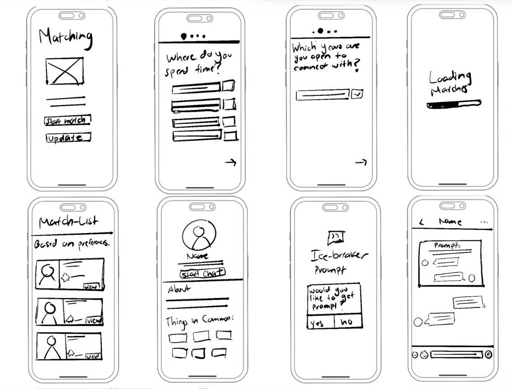
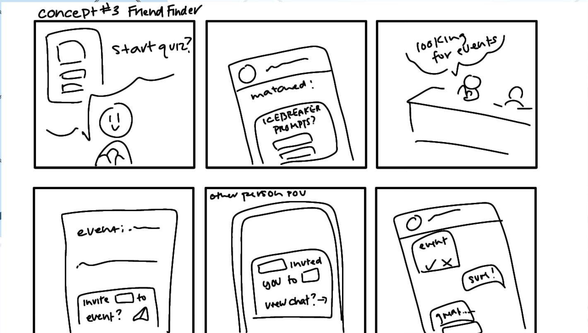
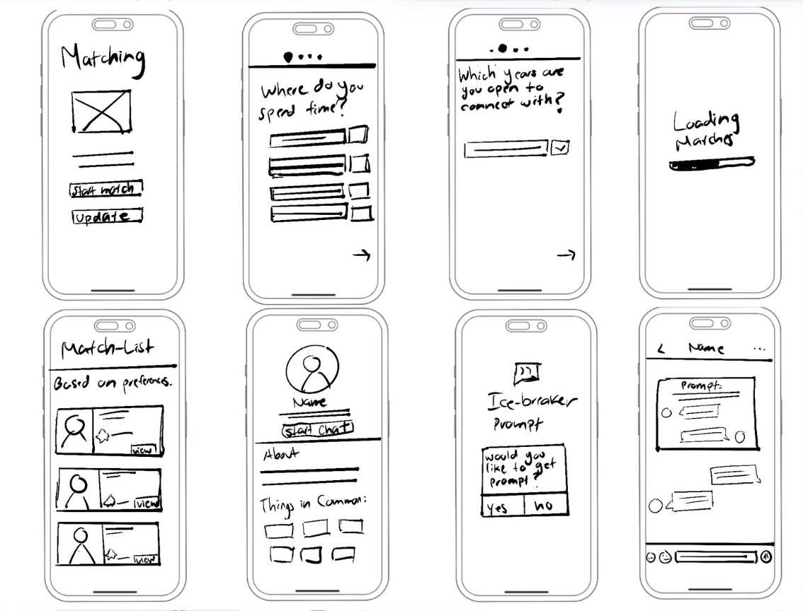
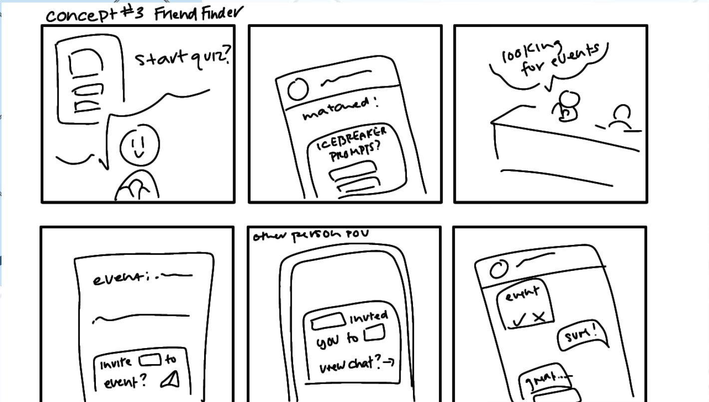

🌟 Uni-Connect
Turning surface-level encounters into genuine campus friendships
Role: UX/UI Designer
Team: Queene C., Lisa H., Suyao L.
Course: GBDA 210
Timeline: April 2025
Tools: Figma, Paper Prototyping, Usability Testing
Context & Problem
At the University of Waterloo, many students especially commuters struggle to build meaningful social connections. Key issues include: shyness, packed schedules, and fragmented event information across platforms like Instagram and WUSA. Research showed that 1 in 5 upper-year students lacks a “real friend.” Our challenge was to design a solution that helps both commuters and residents discover events and transition from online connections to genuine, in-person friendships.
01 Problem Framing & Desk Research
Ran a Crazy 8 sprint (24 ideas) and validated the concept with external data—1 in 5 upper-year students report having no “real friend.” Defined the guiding question: How might we let shy commuters and residents discover events and start conversations effortlessly?
02 Primary Research
We conducted 15 user interviews (commuters, residents, introverts, extroverts) and synthesized 20+ sticky notes into an affinity diagram.
- Initiating social interaction is difficult: “I typically don’t initiate conversations… I wait until someone else initiates first.”
- Event awareness is low: Students miss events because information is scattered across too many platforms.
- Desire for deeper connections: Many feel drained by surface-level friendships and want more emotional depth.
- Social media has limits: Instagram and TikTok help discover events but feel awkward for building real-life connections.
03 Personas & JTBD
Mike — commuter, introvert, struggle with scattered information and need a centralized source.
Carine — commuter, extrovert, seeking for deeper connections.
Key user tasks:
- Filter events by interest and availability
- Match with peers based on shared interests
- Receive personalized event recommendations
- Discover spontaneous nearby events on campus
04 MoSCoW Requirements
Must‑haves : central event list, personalised matching, filtering
Should‑haves : map view, ice‑breaker prompts, interest groups
Could‑haves : mutual‑friend suggestions, event rating and reviews
Excluded : feeds & follower counts to avoid vanity metrics.
05 Paper & Low‑Fi Prototypes
 



Sketched flows on paper, moved into Figma wireframes, and introduced a List ⇄ Map toggle after map‑first layouts confused users.
06 High‑Fi Prototype & Design System

Built a token‑based UI kit; added a location‑aware For You rail, an onboarding progress bar, and a streamlined four‑icon navigation.
07 Usability Testing
We tested 4 core tasks (matchmaking, event navigation, onboarding, chatrooms) with 9 participants.
Outcome: System Usability Scale (SUS) score of 82.5 (90th percentile).
08 Iteration & Issue Log
Resolved 10 key issues
- Added “My Chat Rooms” to help users return to conversations
- Enlarged button sizes for better mobile accessibility
- Introduced dual back buttons in onboarding
- Improved saved event feedback and notification controls
- Allowed users to unselect options in matchmaking
These changes cut average task time by 23% and reduced user confusion.
09 Outcome
Students can now move from “I don’t know anyone” to having an event buddy and a weekend plan. The project proves my ability to translate research into polished, high‑impact UX/UI.